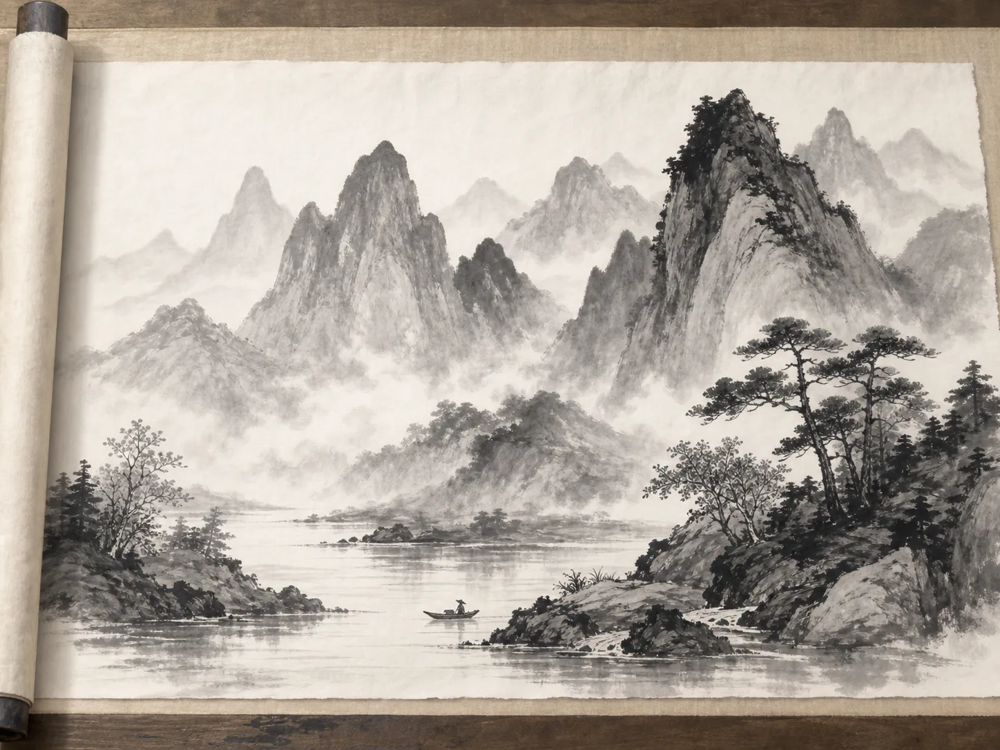
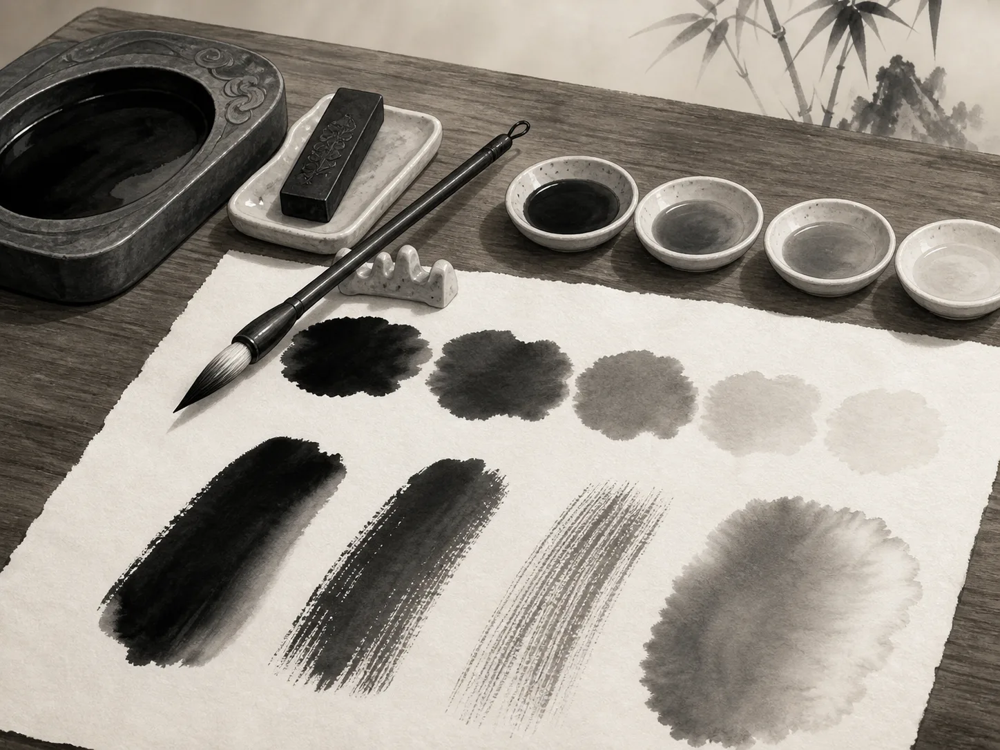
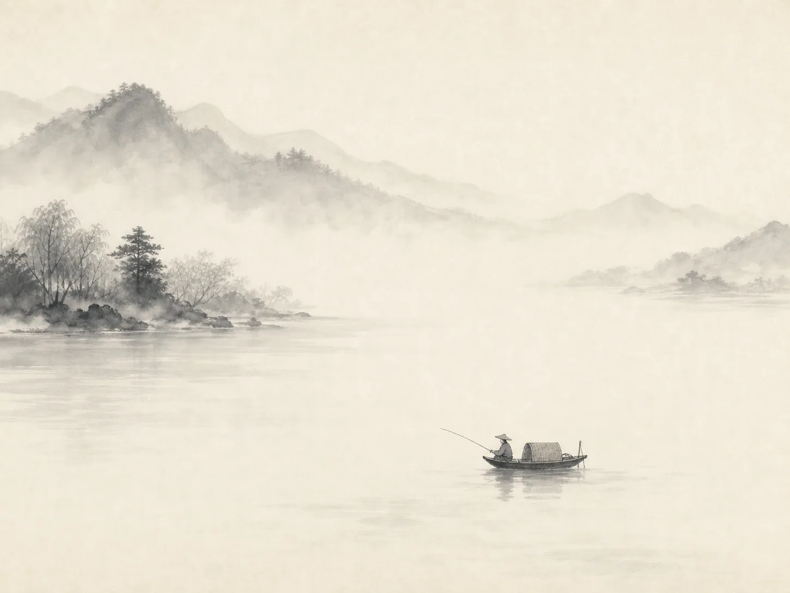

黑色的墨里，怎么藏得下一整段旅程？
How Can Black Ink Hold a Whole Journey?
Page 1
一幅画，要慢慢打开
A Painting Opens Slowly

A landscape handscroll opens from right to left, revealing the view section by section.
想象一下，有人把一个长长的木盒放到你面前。盒子里不是书，也不是一幅装在画框里的画。
打开以后，你会看到一卷仔细收好的纸或绢。解开绳子，把画卷放在桌上，再从右边慢慢展开。
一开始，你只能看见一小段。河边出现了几棵树。再展开一点，一座桥露了出来。桥后有一条小路，弯弯曲曲地通向几间房屋。继续向前，远处的山从雾里慢慢出现。可是剩下的画呢？还卷着呢。
这种画叫作手卷。中国古代的一些画，并不是挂在墙上让人一次看完的。看画的人坐在桌边，把画卷一点一点展开，每次只看其中一段。
有些手卷长得惊人。纽约大都会艺术博物馆收藏的一幅中国山水长卷，展开以后竟然超过了七十英尺。
所以看这样的画，不太像站在一幅照片前面。倒更像是出发去旅行。
Imagine someone places a long wooden box in front of you. Inside is not a book. It is not a framed painting, either.
Wrapped carefully inside is a roll of paper or silk. You loosen the cord, place the roll on a table, and begin opening it from the right.
At first, you can see only a small piece. A few trees appear beside a river. You open a little more. Now there is a bridge. Beyond the bridge, a path winds toward some houses. Farther on, mountains rise through the mist. You want to see the rest—but the rest is still rolled up.
This is a handscroll, one of the special ways Chinese paintings were made and viewed. A handscroll was not meant to hang on a wall where you could see everything at once. You opened it slowly, section by section.
Some were astonishingly long. One surviving Chinese landscape handscroll in the Metropolitan Museum of Art stretches for more than seventy feet.
So looking at it was not quite like standing in front of a picture. It was more like going somewhere.
Page 2
黑墨怎么变出一座山？
A Mountain Made of Black Ink

With different amounts of water, the same black ink can become dark, pale, wet, dry, smooth, or rough.
画卷继续展开，你也许会发现另一件奇怪的事。颜色都到哪里去了？山是黑灰色的。树是深深浅浅的墨线。远处还有一片雾。可是画面一点也不显得单调。
中国画家很早就发现，黑墨并不只有一种样子。蘸上浓墨，落在纸上的一笔可以变成沉重的山石，也可以变成离你很近的大树。加一些水，同样的墨就淡了下来。远处的山可以变成浅浅的一层灰，仿佛隔着很远的空气和雾。
湿一些的毛笔落在纸上，墨会轻轻晕开。干一些的毛笔擦过纸面，却会留下断断续续、粗粗涩涩的痕迹，看起来很像山石和老树皮。
中国画里还有一句常说的话：“墨分五色。”它不是说黑墨真的会变成五种颜色。而是说，画家只用墨和水，也能变出很多不同的感觉：浓的、淡的、干的、湿的，近的、远的，清楚的、模糊的。
有时候，黑墨甚至能画出天气。
As the scroll opens, you notice something else. Where are all the colors? The mountains may be gray and black. The trees are dark strokes. Mist seems to float between them. Yet the scene does not feel empty.
Chinese painters discovered that black ink did not have to look like one flat black color. A brush full of dark ink could make a heavy rock or a tree close to you. Add water, and the same ink could become pale and soft. A distant mountain might almost disappear into gray.
A wet brush could make ink spread gently into the paper. A drier brush could skip across the surface, leaving rough marks that felt like cracked rock or old bark.
Chinese artists even had an expression often translated as “ink has five colors.” The ink was still black. But in a painter’s hand, black could become dark, pale, wet, dry, soft, sharp, near, or far.
It could even become weather.
Page 3
等一下，河水去哪儿了？
Wait—Where Is the River?

A boat, the riverbanks, and a few ripples turn open paper into a river.
又展开一段画。这次出现了一只小船。船上坐着一个人。河岸边还有几丛芦苇。可是仔细看看——水在哪里？
小船下面，也许根本没有画满波浪。那里只是一大片白纸。画家忘记画了吗？并没有。
小船已经告诉你，它浮在水上。两边的河岸告诉你，河流从哪里经过。再加上两三道水纹，你的眼睛就知道发生了什么。剩下的河水，由你自己想出来。
中国画家常常用没有画过的地方表现水。大片空白也可以变成天空、雾气、积雪，或者两座山之间很远很远的距离。
所以一幅画里，有一些东西其实并不在纸上。画家画出小船。你看见了整条河。
You unroll another section. There is a tiny boat. There is a fisherman sitting inside it. There are reeds along the bank. But something is missing. Where is the water?
Much of the river may be nothing more than blank paper. The painter has not forgotten it.
The boat tells you there is water beneath it. The banks tell you where the river runs. Perhaps two or three thin ripples give one more clue. Your eyes do the rest.
Chinese painters often used unpainted space to suggest water. Blank areas could also become sky, mist, snow, or a great distance between mountains.
That means part of the painting exists only in your imagination. The artist paints the boat. You find the river.
Page 4
转过下一个弯，会有什么？
What Is Around the Next Bend?
继续展开手卷，你会发现，它越来越不像一张普通的图片。前面的一座山挡住了去路。再展开一点，那座山慢慢到了身后。一条河拐了个弯，消失在山脚。
弯过去以后呢？继续打开。也许出现一个村庄。也许又是一座山。也许什么也没有，只有一片淡淡的雾。
看画的人自己决定画面出现得有多快。右边看过的部分可以慢慢卷起来，左边新的风景再一点点出现。于是，你不是站在远处看一整片山水。你的眼睛好像真的走进了画里。
而画家也不需要把每一片树叶、每一道水波、每一块石头都画出来。有时候，几笔浓墨已经够了。有时候，一座淡得快要消失的远山已经够了。有时候，什么都不画——也已经够了。
这也许就是中国水墨画最好玩的地方之一。它不只是在问：“这座山画得像不像真的山？”
它还在问：“你觉得这座山离你有多远？”“你能感觉到山里的雾吗？”“你想不想知道，下一个转弯后面还有什么？”
就这样，一卷纸、一支毛笔、一点清水和黑墨，慢慢变成了一个比它们大得多的世界。变成了一整段旅程。
Now the scroll begins to feel different from an ordinary picture. You cannot jump ahead. A mountain blocks the path. Then you unroll farther, and the mountain slips behind you. A river bends out of sight.
What is around the bend? More paper opens. Perhaps there is a village. Perhaps another mountain. Perhaps only mist.
The person viewing the scroll controls how quickly this world appears. One part can be rolled away while another part is opened, so the landscape seems to change as you travel through it.
And the painter does not have to show every leaf, every wave, or every stone. Sometimes a few dark strokes are enough. Sometimes the pale blur of a mountain is enough. Sometimes nothing at all is enough.
That is one of the surprising pleasures of Chinese ink painting. The picture is not simply asking: “Does this look exactly like a mountain?”
It is also asking: “Can you feel how far away the mountain is?” “Can you imagine the mist?” “Do you want to know what is around the next bend?”
And suddenly, a roll of paper, a brush, some water, and black ink have become much bigger than they seemed. They have become an entire journey.